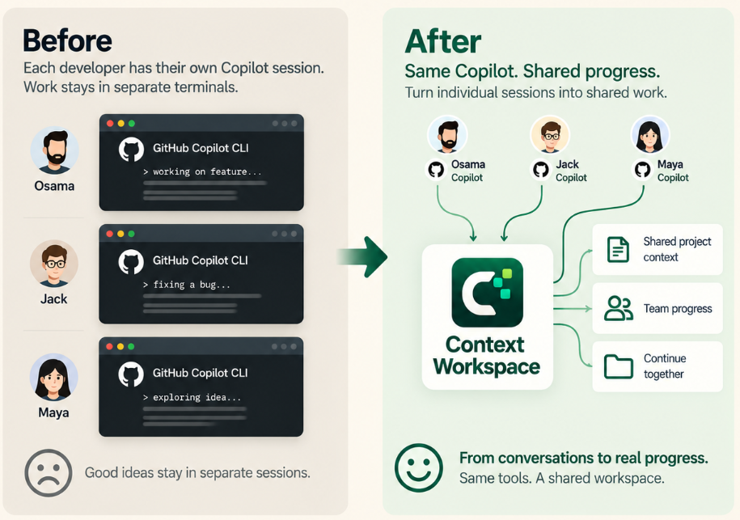

Workflow status
Move work through Backlog, Next, In progress, Blocked, and Done.
Working with
Turn separate AI sessions into one visual project that people and agents can share, manage, and measure.

Use fewer tokensStop re-explaining the same project context.
Share context safelyShare project state, not private conversations.
Keep the team alignedPeople and agents continue from the same progress.
Context Workspace keeps the backlog, completed history, next tasks, blockers, owners, agents, and model recommendations on one Kanban board, so Scrum masters and project leads can supervise progress and decide what happens next.
Move work through Backlog, Next, In progress, Blocked, and Done.
Assign work to a teammate and see which AI agent owns or completed it.
Store the recommended model and reasoning effort for every ticket.
Keep the description, ticket ID, decisions, files, sessions, and completion evidence together.
See open, active, blocked, and completed totals, then review sessions and insights.
Context Workspace detects supported agents, preserves your existing settings and data, and starts the local visual workspace.
Install Context Workspace from https://github.com/OAbouHajar/smart-ai-human-manager on this machine for GitHub Copilot CLI.
Detect the operating system and verify git, Node.js 22.13+, GitHub Copilot CLI, and PowerShell 7 on Windows. Clone the latest main branch into a temporary directory, read the README and matching installer, then run the installer with its no-open option.
Preserve existing Context Workspace data and unrelated Copilot settings. Configure the local Copilot plugin and lifecycle hooks. Verify `http://127.0.0.1:43120/api/health` returns `ok: true`, confirm GitHub Copilot is shown as configured, open the dashboard, and tell me whether Copilot must be restarted.